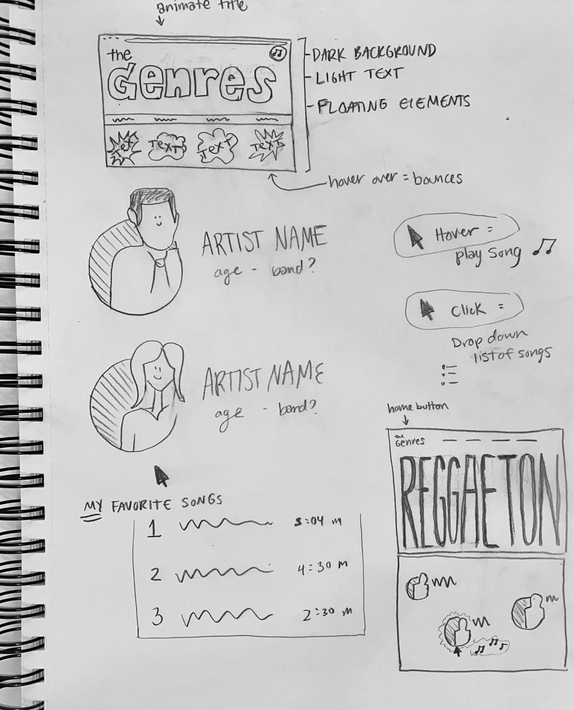
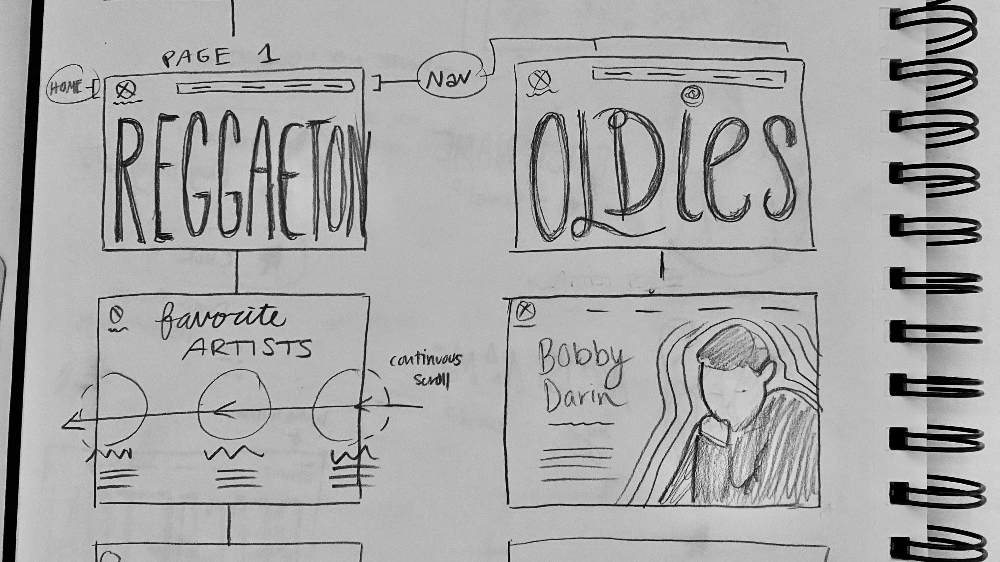
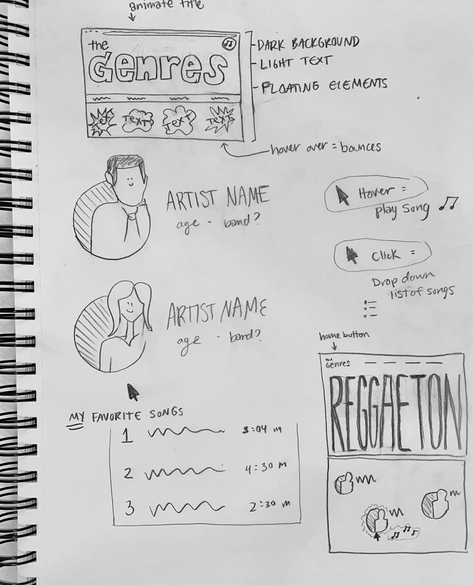
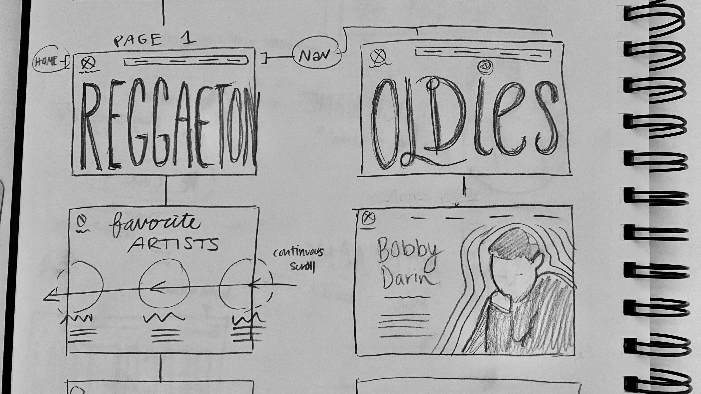

Two websites I would redo are The Alibi and Posies Cafe and Bakery. I chose these websites because these are places I go frequently and really enjoy. I think their websites are not serving the best purposes they could.
The Alibi is a very oldschool tiki bar that has karaoke and cheesy decorations. Right now their website is pretty bad. It is as basic as it gets which is fine but I would love to spruce it up and allow the restuarant of 70 years to get the recognition it deserves. Right now there is a very informal couple of paragraphs to describe their story which is better than most sites. There are few images, no menus, very minor navigation and simply outdated style. I would add adjustable margins so that the website is compatible with multiple types of computers/phones. I would give it a beautiful color scheme to communicate what kind of fun, vibrant place this is. I would add menus, images perhaps a link to yelp for more reviews (or a moving gallery of good reviews). Users would be able to (1) see what the place looks like, (2) find important info such as address, phone and hours, (3) access menus and (4) know their story.
 


